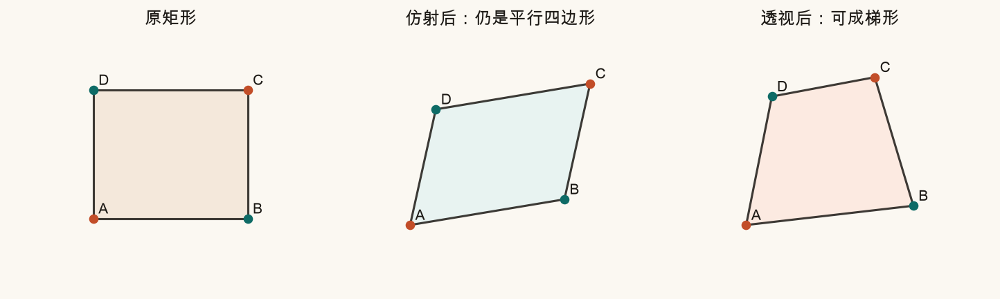
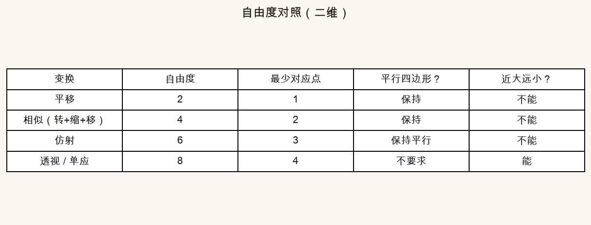
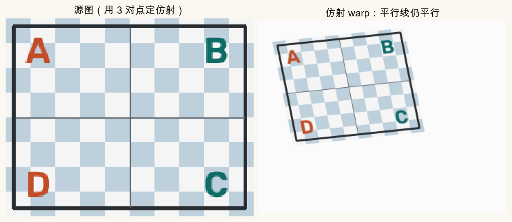
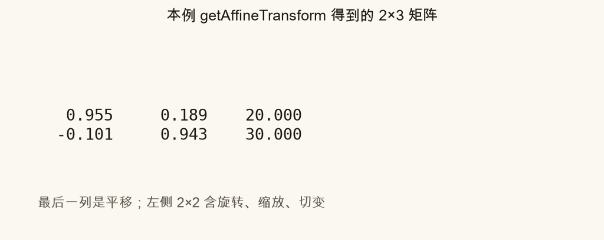
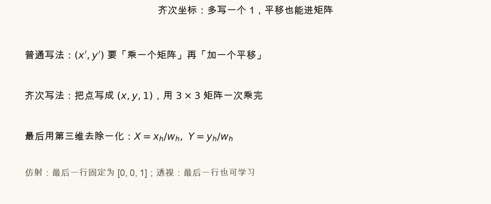
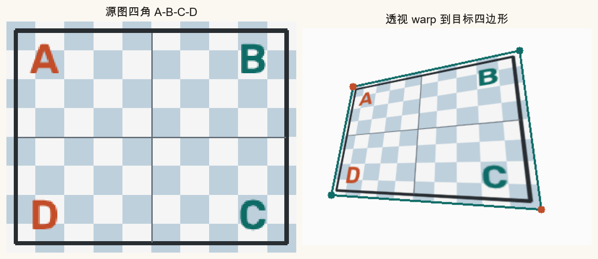
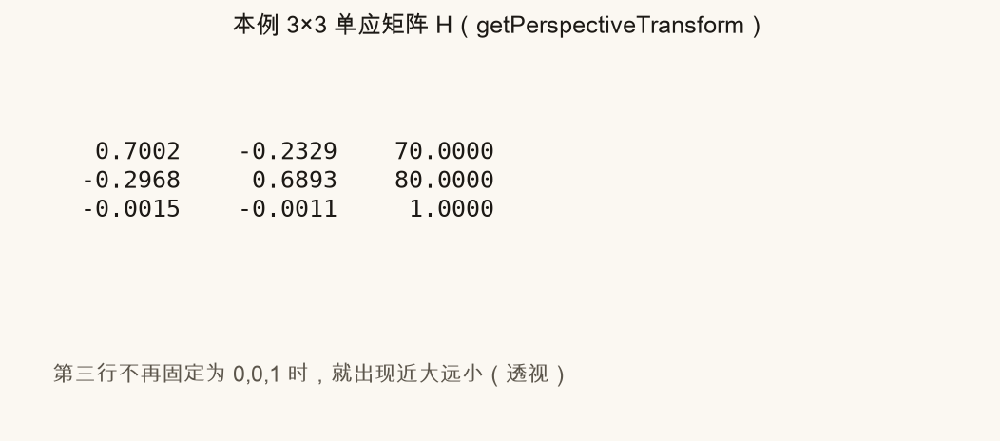

第 2 篇 · 矩阵写法 · 约 50 分钟
第 1 篇的平移、旋转、缩放还拼不出「近大远小」。这一篇升到仿射与透视，并引入齐次坐标：多写一个 1，平移也能塞进矩阵乘法。页面里可以拖动四边形四个角。
手机稍微倾斜着拍一张海报，矩形会变成梯形：上边短、下边长——这是透视。第 1 篇的相似变换（转+缩+移）保圆形仍圆、矩形仍矩形比例，做不到这种梯形。
仿射更进一步，允许切变，能把矩形变成平行四边形，但平行线仍平行，仍然没有真正的灭点汇聚。


二维仿射把点写成：
x′ = a11 x + a12 y + tx
y′ = a21 x + a22 y + ty
一共 6 个数。它包含平移、旋转、缩放、切变。几何上：直线还是直线，平行还平行，矩形一般变成平行四边形。
OpenCV 用 3 对对应点 定仿射，再 warpAffine：
M = cv2.getAffineTransform(src_tri, dst_tri) # 2×3
out = cv2.warpAffine(image, M, (W, H))

getRotationMatrix2D 的 2×3 是同一家族，只是更一般。普通写法里，线性部分用矩阵乘，平移只能「再加一项」。齐次坐标多写一个分量，把点写成列向量 (x, y, 1)，于是仿射也能写成一次乘法：
(x′, y′, 1)T = A · (x, y, 1)T
其中 A 是 3×3，且最后一行固定为 [0, 0, 1]。前面两行的六个自由数，正好对应仿射的 6 自由度。

算例：只平移 (3, −2)。齐次矩阵是对角 1，右上角平移列写 3 与 −2。乘上 (10, 20, 1) 得到 (13, 18, 1)。脚本自检里有同一例子。
若 3×3 矩阵 H 的最后一行不再锁死为 [0, 0, 1]，乘完后第三维 w 可能不是 1。还原平面坐标要做：
X = xh / wh， Y = yh / wh
这一除，引入了非线性，矩形可以变成梯形——就是透视（射影）变换。H 有 9 个数，但整体乘一个非零常数结果相同，所以实质 8 自由度。至少需要 4 对不共线对应点。
H = cv2.getPerspectiveTransform(src_quad, dst_quad) # 3×3
out = cv2.warpPerspective(image, H, (W, H))

拼接里：若场景近似一个平面（墙、远处风景），常用一个 H 把图 B 变到图 A。近景+大平移时视差太大，单个 H 会不够——第 3、11 篇再谈失败模式。
橙青四角是目标四边形。拖动它们，下方显示由「单位正方形 → 该四边形」估出的 H（示意数值）。若四边形扭成自交，提示会报警。
source .venv/bin/activate # 若尚未激活
python code/ch02_affine.py会写出 ch02_shapes.png、ch02_affine_warp.png、ch02_perspective_warp.png、ch02_homogeneous.png 等，以及你的 ch02_my_perspective.png。
打开 code/ch02_affine.py，改顶部 DST_QUAD（左上、右上、右下、左下）。
0, 0, 1。getPerspectiveTransform 可能仍给出矩阵，但 warp 会很难看。这是在提示：对应点质量很重要。仿射保持平行。透视一般不保持，可以出现灭点。
H 与 λH（λ≠0）表示同一变换，整体尺度自由，因此 9−1=8。
[0, 0, 1]。放开后才进入透视。
仿射 3 对；透视 4 对（且不能退化，例如三点共线）。
下一篇把透视矩阵正式叫做单应性：何时一张 H 就够，怎样 warp 到另一坐标系，以及大视差何时失效。